Verkehrswege auf Bau-/Montagestellen müssen jederzeit sicher begehbar sein.
Üblicherweise werden Verkehrswege mit Absturzgefahr durch einen dreiteiligen Seitenschutz gesichert. Nur in Ausnahmefällen, bei gering frequentierten Verkehrswegen, sind andere Schutzmaßnahmen entsprechend Abb. 1-3 "Rangfolge der Schutzmaßnahmen" einsetzbar.
Die Höhen, ab denen Verkehrswege auf Baustellen gegen Absturz gesichert werden müssen, gehen aus Abb. 1-2 "Absturzhöhen, ab denen Maßnahmen gegen Absturz eingesetzt werden müssen" hervor. Weitere Informationen bieten die DGUV Vorschrift 38/39 "Bauarbeiten" sowie die technische Regel zur Arbeitsstättenverordnung "Schutz vor Absturz und herabfallenden Gegenständen, Betreten von Gefahrenbereichen" (ASR A2.1).
4.1.1 Aufstiege allgemein
Die Einsatzmöglichkeiten von Aufstiegen zu hochgelegenen Arbeitsplätzen zeigt Abb. 4-1.
Grundsätzlich sollen Aufstiege zu Arbeitsplätzen auf Bau-/Montagestellen als Treppen oder Laufstege ausgeführt sein. Zum Einsatz kommen z. B.:
Sind Treppen aus Rosten konstruktiv vorgesehen, müssen sie dem Baufortschritt folgend eingebaut werden, um einen sicheren Aufstieg zur nächsten Ebene zu gewährleisten.
Nähere Ausführungen zu Treppen siehe DGUV Information 208-005 "Treppen", zu Treppenleitern DIN EN ISO 14122-3:2016-10 "Sicherheit von Maschinen - Ortsfeste Zugänge zu maschinellen Anlagen - Teil 3: Treppen, Treppenleitern und Geländer".
4.1.2 Leitern als Aufstiege
Anlegeleitern dürfen als Aufstiege nur verwendet werden, wenn
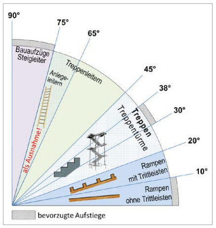
Abb. 4-1 Einsatzmöglichkeiten verschiedener Aufstiege
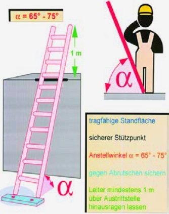
Abb. 4-2 Sichere Aufstellung einer Anlegeleiter
Absturzgefahren bestehen insbesondere
4.2.1 Absturzsicherungen an den Außenrändern
Vor Montage der Roste müssen die bauseits bleibenden Geländer an den Bühnenaußenrändern bereits angebracht sein.
Als weitere Schutzmaßnahmen eignen sich für die Rostmontage
Temporären Seitenschutz bieten einschlägige Hersteller an. Dieser ist von einem gegen Absturz gesicherten Arbeitsplatz, z. B. mit einer fahrbaren Hubarbeitsbühne, zu montieren.
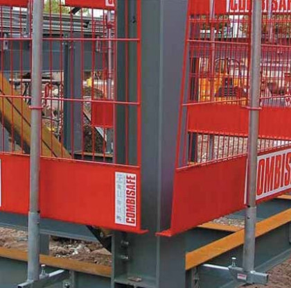
Abb. 4-3 Beispiel eines temporären Seitenschutzes
Der Abstand der Randsicherungspfosten darf max. 10,0 m betragen. Öffnungen dürfen nicht größer als 0,3 m sein.
Randsicherungen bestehen aus am Gebäude befestigten Konstruktionen, in die Schutznetze eingehängt werden (Abb. 4-4 und 4-5). Die Montage der Randsicherungen sollten nur Fachfirmen ausführen.
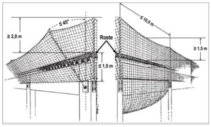
Abb. 4-4 Randsicherungen (siehe DGUV Information 201-023 "Sicherheit von Seitenschutz, Randsicherungen und Dachschutzwänden als Absturzsicherungen bei Bauarbeiten")
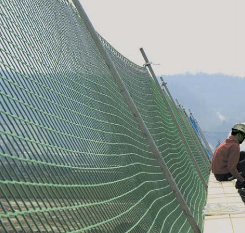
Abb. 4-5 Randsicherung mit Schutznetzen
Fanggerüste sind in der DIN 4420-1:2004-03 Teil 1 "Schutzgerüste – Leistungsanforderungen, Entwurf, Konstruktion und Bemessung" geregelt. Es ist darauf zu achten, dass der senkrechte Abstand zwischen Absturzkante und Belagfläche 2,0 m nicht übersteigen darf. Die Breite w der Fanglage muss bei Einsatz eines Seitenschutzes mindestens 0,9 m betragen. Bei Verwendung von Schutzwänden kann die Breite b auf 0,7 m reduziert werden (Abb. 4-6 und 4-7).
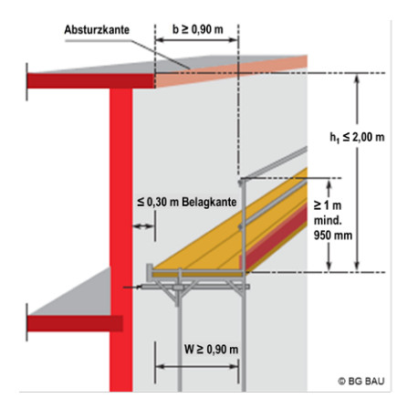
Abb. 4-6 Abmessungen eines Fanggerüstes (siehe DGUV Information 201-011 "Handlungsanleitung für den Umgang mit Arbeits- und Schutzgerüsten")
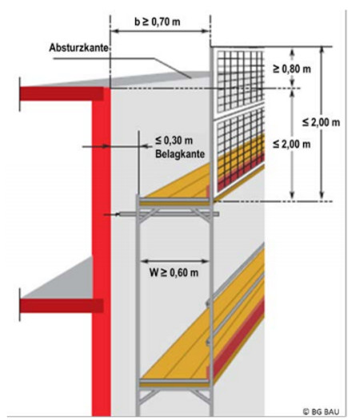
Abb. 4-7 Fanggerüst mit Schutzwand (siehe DGUV Information 201-011 "Handlungsanleitung für den Umgang mit Arbeits- und Schutzgerüsten")
Absperrungen durch Seile, Ketten usw. müssen mindestens einen Abstand von 2,0 m zur Absturzkante haben (Abb. 4-8). Auf Absturzsicherung an der Bühnenkante kann dann verzichtet werden. Im deutlich gekennzeichneten Absturzbereich dürfen sich keine Personen ungesichert aufhalten. Die Verwendung von Flatterband (Trassierband) ist als Absperrung nicht zulässig, weil es durch die geringe mechanische Festigkeit leicht zerreißt.
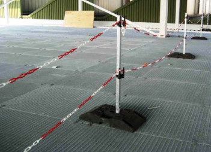
Abb. 4-8 Im sicheren Abstand zur Absturzkante (größer 2,0 m) abgesperrte Gitterrostbühne
4.2.2 Maßnahmen gegen Absturz ins Gebäudeinnere
Roste sind grundsätzlich sofort nach dem Verlegen an der Unterkonstruktion zu befestigen, damit sie bei Belastung, z. B. beim Begehen während der Montage, nicht vom Auflager abrutschen. Dazu gehört auch das Umbiegen der Blechlappen bei Sicherheitsbefestigungen (siehe DGUV Information 208-007, Abb. 14d und 14e). Ist eine sofortige Befestigung nicht möglich, sind diese Flächen abzusperren.
Einsatz von Auffangnetzen
Bei der Montage von Rosten haben sich Auffangnetze
als Schutzmaßnahme bewährt. Sie verhindern zwar
nicht den Sturz, fangen aber Personen sicher auf,
sodass schwerere Verletzungen vermieden werden
(Abb. 4-9).
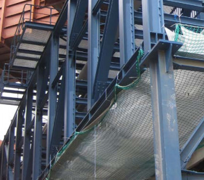
Abb. 4-9 Einsatz eines Schutznetzes zur Montage von Rosten
Schutznetze des Typs S, großflächig verspannt, stellen eine wirksame Auffangeinrichtung gegen Absturz an der Verlegekante dar (Abb. 4-11). Unter Öffnungen verspannt dienen sie auch dort als Absturzsicherung.
Beim Einsatz von Schutznetzen ist u. a. Folgendes zu beachten:
Ein Berechnungsbeispiel zum Aufhängen der Schutznetze unter Berücksichtigung des erforderlichen Freiraumes ist im Anhang 6 aufgeführt. Dieses zeigt, dass auch bei geringen Bühnenhöhen Schutznetze als Absturzsicherungen verwendet werden können.
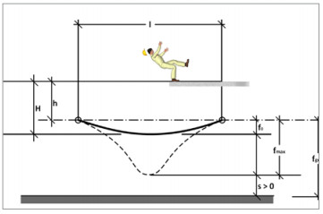
Abb. 4-10 Verformung eines Auffangnetzes
| I | = Spannweite des Schutznetzes |
| h | = lotrechter Abstand zwischen Absturzkante und Aufhängepunkt des Schutznetzes |
| H | = lotrechter Abstand zwischen Absturzkante und Auftrefffläche im Schutznetz |
| f0 | = Verformung infolge Eigenlast des Schutznetzes |
| fmax | = größte Verformung des Schutznetzes |
| fges | = gesamter Freiraum unter dem Netz |
| S | = Freiraum für eventuelle Verkehrswege oder Einbauten |
Montage von Auffangnetzen
Die Netzmontage sollte durch eine fachkundige Firma
mit dafür besonders qualifiziertem Personal durchgeführt werden. Diese benötigt vom Rostverleger Angaben,
wo die Roste aufliegen und wo keine Netzbefestigung
angebracht werden darf.
Der horizontale Abstand zwischen Netz und Absturzkante beträgt maximal 0,3 m. Der Abstand zwischen den Aufhängepunkten darf 2,5 m nicht überschreiten.
Die Netzverlegerin oder der Netzverleger überprüft die Schutznetze vor jedem Einsatz auf den ordnungsgemäßen Zustand. Die regelmäßige Prüfung erfolgt jährlich durch den Hersteller der Netze (Abb. 4-12). Der Nachweis der Prüfung ist am Netz angebracht (Abb. 4-13).
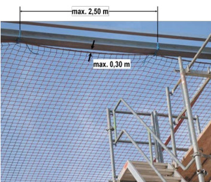
Abb. 4-11 Befestigung eines Auffangnetzes
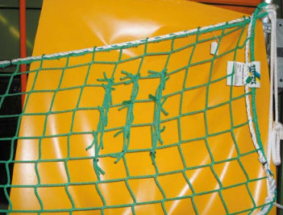
Abb. 4-12 Prüffäden und Kennzeichnung
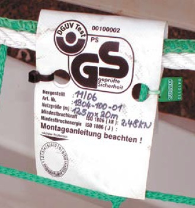
Abb. 4-13 Kennzeichnung mit Prüfnachweis
Auch die Rostverlegerinnen und Rostverleger haben auf den ordnungsgemäßen Zustand der Schutznetze zu achten. Werden Mängel am Netz oder Zubehör festgestellt, wie
muss eine befähigte Person, z. B. der Netzverleger, über den weiteren Einsatz entscheiden. Dies trifft ebenfalls zu, wenn Schutznetze durch Auffangen von Personen oder Herabfallen von Gegenständen beansprucht wurden.
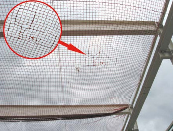
Abb. 4-14 Beschädigte Maschen; Reparatur des Netzes ist so nicht zulässig
Schutzmaßnahmen bei Bodenöffnungen
Bei der Planung der Arbeiten ist zu berücksichtigen,
dass auch nach Beendigung der Verlegung der Roste die
Sicherungsmaßnahmen gegen Absturz für nachfolgende
Gewerke wirksam bleiben.
Öffnungen sind grundsätzlich unverschiebbar und ausreichend tragfähig abzudecken (Abb. 4-15) oder durch Umwehrungen zu sichern.
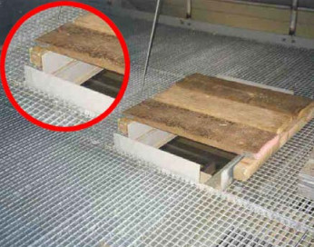
Abb. 4-15 Nicht vollständig geschlossene Bühnenöffnung
4.2.3 Einsatz von PSA gegen Absturz (Anseilschutz)
Der Einsatz von Anseilschutz als persönliche Schutzausrüstung gegen Absturz stellt im Regelfall für die Montage von Rosten eine ungeeignete Schutzmaßnahme dar.
PSA gegen Absturz behindert in vielen Fällen die Beschäftigten beim Verlegen.
Der Einsatz von PSA gegen Absturz ist z. B. gerechtfertigt, wenn der Freiraum unterhalb der Bühne keinen Netzeinsatz zulässt oder wenn die Montage nur kurze Zeit in Anspruch nimmt und nur wenige Teile zu montieren bzw. demontieren sind.
Anforderungen über den Einsatz von PSA gegen Absturz siehe DGUV Regel 112-198 "Benutzung von persönlichen Schutzausrüstungen gegen Absturz".
Weiter sind folgende Gesichtspunkte u. a. zu beachten:
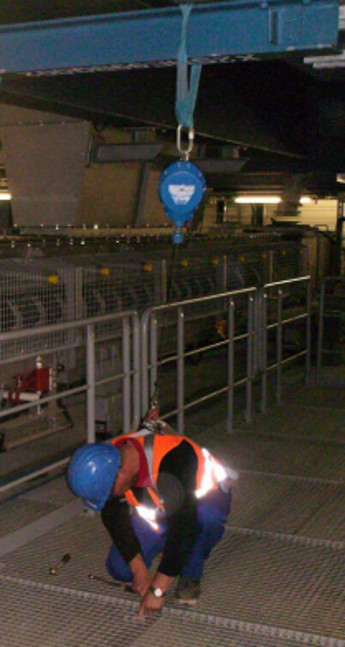
Abb. 4-16 PSA gegen Absturz mit Höhensicherungsgerät
4.2.4 Einsatz von fahrbaren Arbeitsbühnen
In seltenen Fällen und nur für Rostmontagen in geringer Höhe und geringen Umfangs kommen fahrbare Arbeitsbühnen (auch Rollgerüst oder Schnellbaugerüst genannt) zum Einsatz (Abb. 4-17). Dabei sind insbesondere folgende Punkte zu beachten:
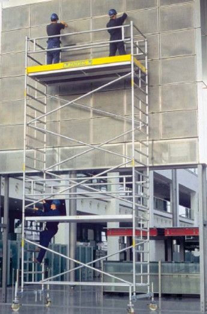
Abb. 4-17 Korrekt aufgebaute fahrbare Arbeitsbühne
4.2.5 Einsatz von fahrbaren Hubarbeitsbühnen (FHAB)
Fahrbare Hubarbeitsbühnen werden bei der Montage von Rosten nur selten eingesetzt. Sie eignen sich besonders für Arbeiten in großen Höhen mit häufig wechselnden Einsatzorten. Der Einsatz von Hubarbeitsbühnen ist mit Gefährdungen verbunden, wenn sie nicht bestimmungsgemäß benutzt werden.
Daher sind mindestens folgende Punkte zu beachten:
Weitere Ausführungen zu fahrbaren Hubarbeitsbühnen siehe DGUV Information 208-019 "Sicherer Umgang mit fahrbaren Hubarbeitsbühnen" und DGUV Grundsatz 308-008 "Ausbildung und Beauftragung der Bediener von Hubarbeitsbühnen".
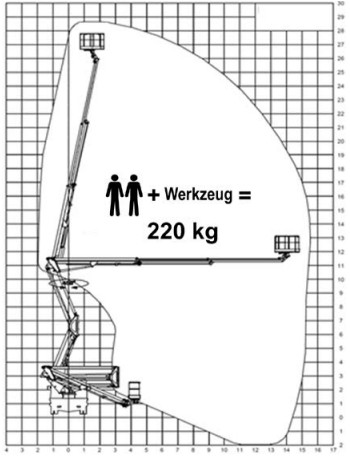
Abb. 4-18 Arbeitsdiagramm einer fahrbaren Hubarbeitsbühne
4.2.6 Maßnahmen gegen Ertrinken/Versinken
Werden Roste über oder an Stoffen montiert, in denen die Gefahr des Ertrinkens, Erstickens oder Versinkens besteht, z. B. Flüssigkeiten, Schlämme oder Schüttgüter, sind Schutzmaßnahmen gegen Absturz unabhängig von der Absturzhöhe vorzusehen.
Können keine Schutzmaßnahmen gegen Absturz ergriffen werden, sind bei Arbeiten am, auf und über dem Wasser zum Schutz gegen Ertrinken folgende PSA und Rettungsmittel bereitzuhalten und zu benutzen:
Bei Verwendung von PSA gegen Absturz ist darauf zu achten, dass Systeme, bestehend aus Auffanggurt und Höhensicherungsgerät, für Arbeiten über Stoffen, in die man versinken kann, ungeeignet sind. Höhensicherungsgeräte funktionieren nur bei bestimmten Auszugsgeschwindigkeiten, die beim Versinken in Stoffen nicht erreicht werden.